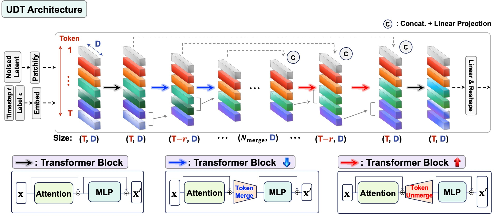
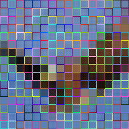
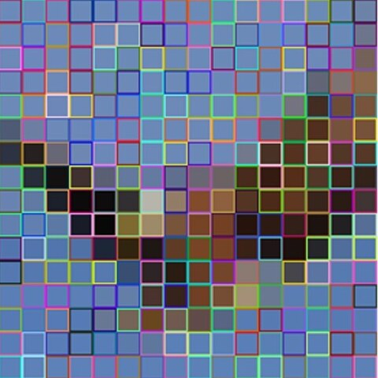
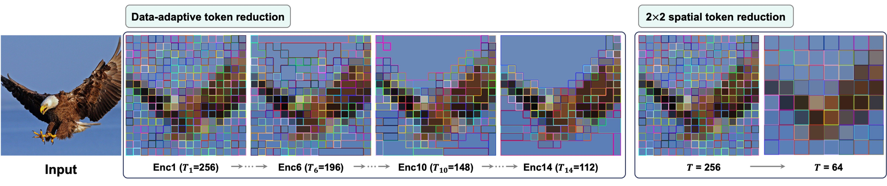
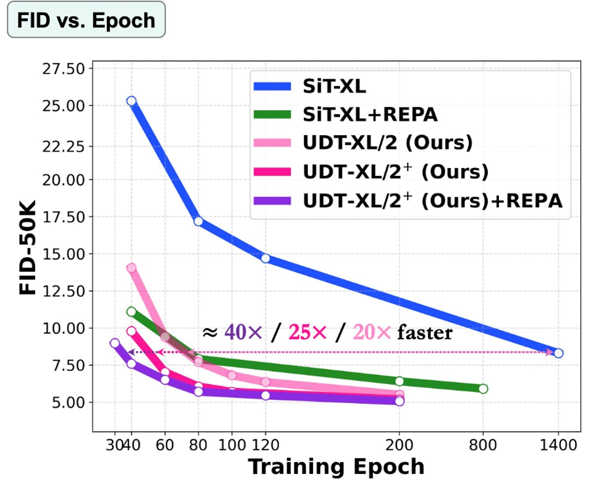

UDT turns a Diffusion Transformer into a U-Net using data-adaptive token merging/unmerging while keeping token dimensions fixed.
It preserves compatibility with existing DiT pipelines while substantially accelerating convergence and reducing computational costs.
Bars: training epochs, linear scale.
| Epoch | GFLOPs | FID↓ | IS↑ | |
|---|---|---|---|---|
| SiT-XL/2 | 600 | 524.6 | 2.62 | 252.2 |
| SiT-XL/2 + REPA | 200 | 524.6 | 2.10 | 274.6 |
| UDT-XL/2+ | 100 | 158.1 | 1.63 | 320.5 |
| UDT-XL/2+ | 200 | 158.1 | 1.58 | 327.7 |
* Note: FID samples are generated by randomly sampling class labels, i.e., without class-balanced sampling.
At 256×256, UDT needs only ~0.77× the GFLOPs of SiT at every model size (B, L, XL) .
Going from 256×256 to 512×512 raises the token count 4× (T = 256 → 1024).
SiT at 512×512 needs ~4.5× the GFLOPs , while UDT needs only 1.3–2.2× because token merging shortens the sequence .
Diffusion Transformers (DiTs) have emerged as a core architecture in generative modeling due to their scalability and adaptability to multimodal tasks. DiTs comprise isotropic transformer blocks, and learn representations progressively across depth, where the denoising objective drives later layers to focus on fine-detail reconstruction. This results in degraded representation quality and an imbalanced encoder-decoder behavior. Prior approaches such as representation alignment (REPA) mitigate this by encouraging stronger early representations via training regularization. Alternatively, U-Net-style DiT architectures introduce explicit multi-scale encoder-decoder structures for improved convergence. But they build on standard U-Net wisdom via learnable operators for spatial downsampling, which are not well-suited to transformer architectures, introducing inefficiencies and compatibility issues with components such as cross-attention and representation regularization.
In this work, we propose UDT, a U-Net diffusion transformer that combines the representation power of DiTs with the encoding-decoding benefits of U-Nets, through data-adaptive token merging for downsampling and upsampling, while preserving the DiT token dimension. Our baseline UDT architecture outperforms existing U-Net DiTs and achieves performance comparable to REPA across all model sizes. Furthermore, using architectural optimization and REPA, UDT outperforms SiT's 7.9 FID at 1400 epochs (w/o CFG) within 40 epochs (~40× faster convergence) for XL model size on 256×256 ImageNet. Finally, it achieves strong image generation performance with CFG, reaching FID of 1.38 (320 epochs) with SD-VAE and 1.35 (500 epochs) with VA-VAE, providing a new backbone for DiTs with strong empirical benefits.
UDT keeps every block a standard transformer block of width D. Down- and up-sampling happen between attention and MLP: encoder blocks merge the r most redundant tokens, decoder blocks unmerge them back, and skip connections join matching encoder/decoder stages with a concat + linear projection.

Attention + MLP at full resolution at the input and output ends, identical to DiT/SiT.
After attention, similar tokens are merged, so the encoder reduces tokens where the image is redundant (e.g. sky), not on a fixed grid.
The decoder reverses each merge to restore the full token set. Skip connections concat encoder features and project back to D.
Drag through the 12 merge steps (r = 12 tokens per block). UDT keeps fine tokens on the eagle and merges the uniform background into large regions. A fixed 2×2 spatial pooling, as used by prior U-Net DiTs, treats every region the same.




| Model | Tokenizer | REPA | Epochs | FID ↓ |
|---|---|---|---|---|
| UDT-XL/2 | SD-VAE | – | 500 | 1.41 |
| UDT-XL/2+ | SD-VAE | – | 350 | 1.42 |
| UDT-XL/2+ | SD-VAE | ✓ | 320 | 1.38 |
| UDT-XL/2+ | VA-VAE | – | 500 | 1.35 |
| Model | Tokenizer | REPA | FID ↓ |
|---|---|---|---|
| UDT-XL/2+ | SD-VAE | – | 1.58 |
Drop UDT into any isotropic DiT for faster training and better generation!
| Epoch | FID↓ | |
|---|---|---|
| DiT-B/2 | 80 | 43.5 |
| UDT-DiT-B/2 | 80 | 30.6 |
| DiT-L/2 | 80 | 23.3 |
| DiT-L/2 + REPA | 80 | 15.6 |
| UDT-DiT-L/2 | 80 | 13.5 |
| DiT-XL/2 | 80 | 19.5 |
| DiT-XL/2 + REPA | 80 | 12.3 |
| UDT-DiT-XL/2 | 80 | 11.2 |
| Epoch | FID↓ | FID*↓ | |
|---|---|---|---|
| JiT-B/16† | 50 | 82.6 | 13.6 |
| JiT-B/16† | 200 | 66.1 | 4.7 |
| UDT-JiT-B/16+ | 100 | 64.6 | 6.3 |
| UDT-JiT-B/16+ | 200 | 58.9 | 4.6 |
| JiT-L/16† | 50 | 62.2 | 6.9 |
| JiT-L/16† | 200 | 48.0 | 3.0 |
| UDT-JiT-L/16+ | 50 | 47.9 | 5.8 |
| UDT-JiT-L/16+ | 200 | 37.7 | 2.8 |
| Epoch | FID*↓ | IS*↑ | |
|---|---|---|---|
| LightningDiT-XL/1† | 64 | 2.11 | 252.3 |
| UDT-XL/1+ | 64 | 1.99 | 265.8 |
| LightningDiT-XL/1† | 800 | 1.35 | 295.3 |
| UDT-XL/1+ | 500 | 1.35 | 322.0 |
| Iter. | FID*↓ | |
|---|---|---|
| MMDiT | 150K | 5.5 |
| MMUDT | 150K | 4.7 |
@article{yun2026udt,
title = {UDT: Reconciling U-Nets and Diffusion Transformers with Data-Adaptive Token Reduction},
author = {Yun, Junno and Al{\c{c}}alar, Ya{\c{s}}ar Utku and Ak{\c{c}}akaya, Mehmet},
journal = {arXiv preprint arXiv:2608.01298},
year = {2026}
}